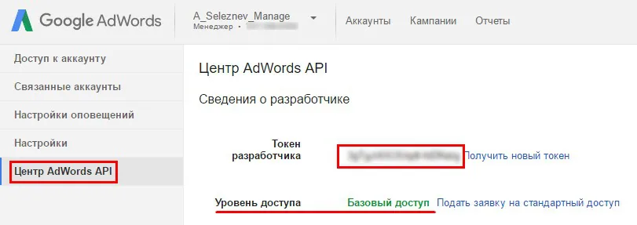
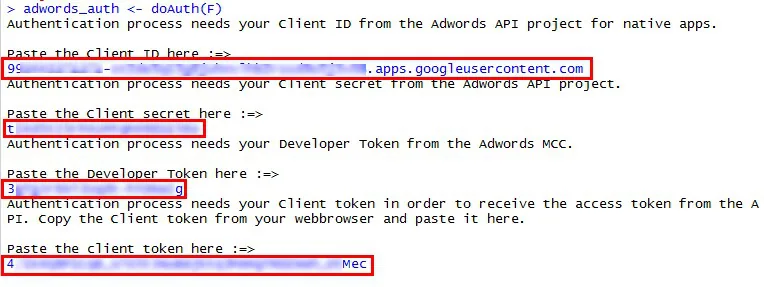
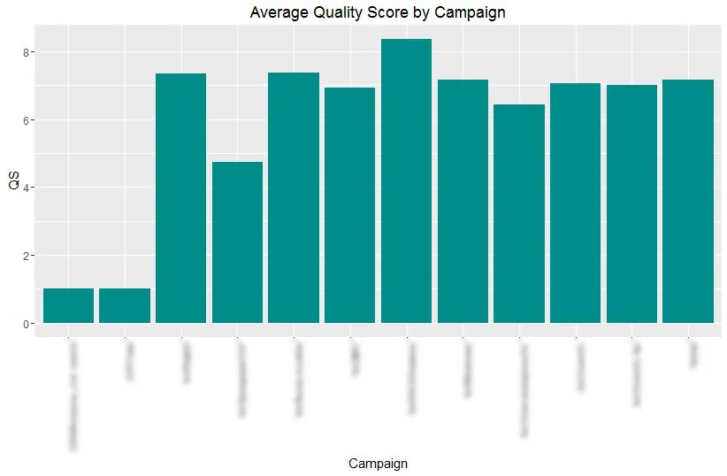
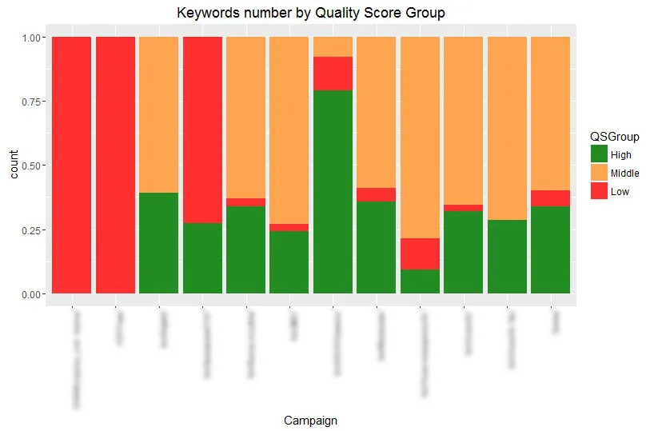
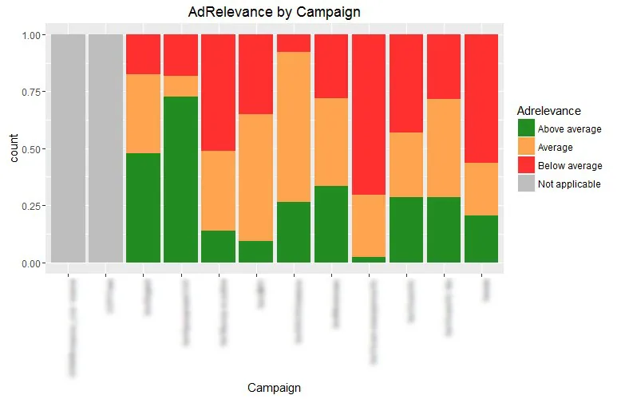
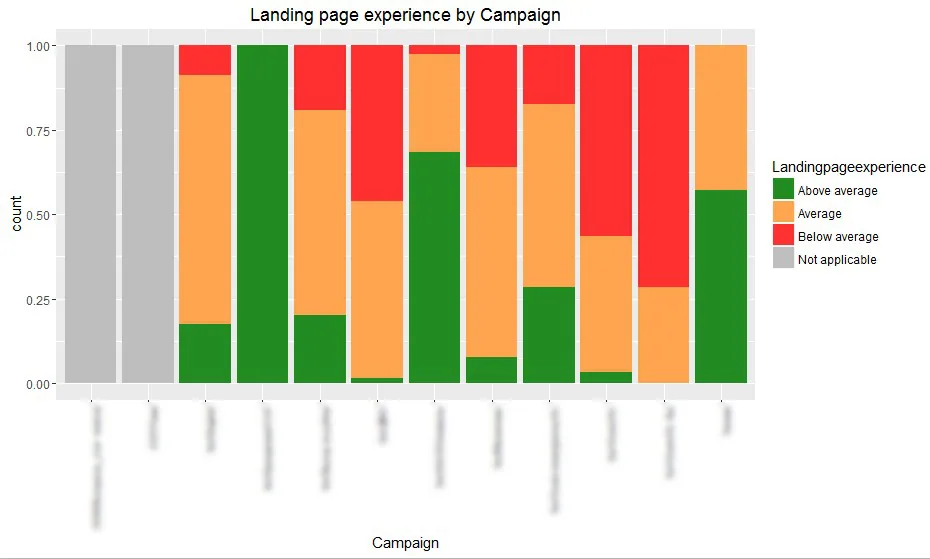
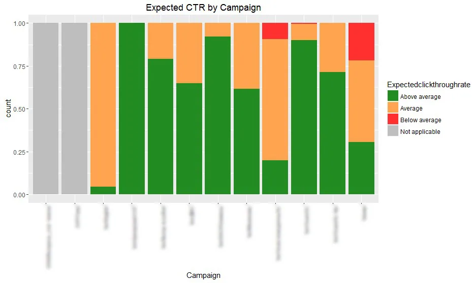

Как визуализировать показатель качества ключевых слов — рецепт скрипта на языке R
Хотите быстро определить слабые места ваших рекламных кампаний? Используйте понятные и удобные графики со сводкой информации о составляющих показателя качества ключевых слов. В этой статье я подробно опишу, как легко проанализировать эти данные с помощью языка программирования R.

Зачем нужно визуализировать показатель качества?
Мы уже рассказывали, что в феврале 2016 года Google запустил новую версию API, и появилась возможность выгружать статусы составляющих показателя качества. Но тогда еще не было готовых бесплатных скриптов для работы с этими данными.
Небольшая ремарка. Думаю, ни для кого из рекламодателей не секрет, как проходит аукцион в Google AdWords. Все объявления ранжируются согласно рейтингу, рассчитанному по формуле:
[показатель качества ключевого слова] * [ставка].
Визуализация показателя качества помогает оптимизировать работу специалиста. Добившись высокого уровня показателя качества ключевых слов, вы значительно снизите стоимость клика и за тот же бюджет получите больше качественного трафика.
Что требуется для реализации скрипта?
- Скачать и установить последнюю версию языка R.
- Для более удобной работы в R советую скачать среду разработки R Studio.
- Получить user ID в Google Console (как это сделать).
- Получить токен разработчика AdWords API (как получить токен).
- Аккаунт Google Analytics должен быть связан с Google AdWords.
После этого можно перейти к внедрению скрипта.
1. Приступаем к работе в R
1.1. Практически всегда работа со скриптами R начинается с подключения нужного набора пакетов. Мы будем использовать пакет «RAdwords», но установим с репозитория GitHub, использовав пакет «devtools», потому что в CRAN (основном хранилище R) нет последней версии «RAdwords».
При работе пакета «RAdwords» с кириллицей может возникнуть ряд проблем, поэтому название рекламных кампаний, групп объявлений и ключевые слова будем загружать из базы Google Analytics с помощью пакета «RGoogleAnalytics».
Для построения диаграмм будем использовать пакет «ggplot2», а для для выгрузки данных в Google Таблицу нам понадобится пакет «googlesheets».
Установка и подключение пакетов осуществляется с помощью команд install.packages и require.
#Установка и подключение требуемых пакетов
install.packages("devtools")
require("devtools")
install.packages("RGoogleAnalytics")
require(RGoogleAnalytics)
install_github('jburkhardt/RAdwords')
require(RAdwords)
install.packages("googlesheets")
require(googlesheets)
install.packages("ggplot2")
require(ggplot2)
1.2. Следующая часть скрипта объявляет переменные для обращение к API Google AdWords и Google Analytics:
- clienid — Client ID из Google Console;
- secret — Secret от Client ID из Google Console;
- adwords_token — токен AdWords API;
- ga_view — ID представления Google Analytics;
- adwordsID — ID аккаунта AdWords.
##Объявляем переменные
clienid <- "XXXXXXXXXXXXXXXXXXXXXXXXX.apps.googleusercontent.com" #Client ID из google console
secret <- "XXXXXXXXXXXXXXXXXXXX" #Secret от Client ID из google console
adwords_token <- "XXXXXXXXXXXXXXXX" #Токен AdWords API
ga_view <- "ga:XXXXXXXXXX" #ID представления Google Analytics
adwordsID <- "XXX-XXX-XXX" #ID аккаунта AdWords
В отчёт будут выводиться не только составляющие показателя качества, но и некоторые статистические данные: показы, клики, средняя позиция и так далее. На этом этапе нужно установить период, за который планируем информацию. Введём ещё две переменные:
- start_period — дата начала отчётного периода;
- end_period — дата окончания отчётного периода.
Хочу обратить внимание, что в AdWords нет исторических данных о динамике изменения показателя качества, вы получите только информацию на текущий момент.
#Определяем отчётный период
start_period <- c(day = "01",
month = "05",
year = "2016")
end_period <- c(day = "05",
month = "06",
year = "2016")
В статье «Как оценить потерянный доход с помощью языка R?» я уже описывал процесс аутентификации в Google Analytics и Google AdWords, поэтому в пункте 2 и 3 приведу только пошаговый алгоритм.
2. Аутентификация в Google Analytics
2.1. Следующий шаг — аутентификация в Google Analytics. Для её прохождения в пакете «RGoogoleAnalytics» есть команда «Auth». Добавьте в скрипт следующие строки.
#Аутентификация в сервисах.
#Аутентификация в Google Analytics
ga_auth <- Auth(clienid,secret)
Выделите эту часть скрипта и нажмите «Ctrl+Enter».
2.2. Сразу после этого в консоли, которая по умолчании располагается в нижнем левом углу RStudio, появится запрос: хотите ли вы сохранить учётные данные авторизации в аккаунте Google. Я советую ответить на этот вопрос отказом, написав «No». Далее в консоли будет сгенерирована ссылка, скопируйте её и вставьте в браузер.

2.3. По этой ссылке в браузере откроется список доступных аккаунтов Google. Выберите тот, в котором есть доступ к нужному представлению Google Analytics.

После этого потребуется предоставить разрешение на просмотр данных Google Analytics.

2.4. Далее в браузере генерируется ключ доступа, скопируйте его и вставьте в консоль RStudio.

3. Аутентификация в Google AdWords
3.1. Для аутентификации в Google AdWords необходимо использовать команду «doAuth». Скопируйте и вставьте после всех предыдущих строк в RStudio следующую часть кода:
#Аутентификация в Google AdWords
adwords_auth <- doAuth(F)
Выделите этот фрагмент скрипта с помощью мыши и нажмите «Ctrl+Enter».
3.2. Потребуется вставить учетные данные client ID и Secret, которые были сгенерированны при создании Developer Client в консоли разработчика Google.
3.3. Далее понадобится ввести токен разработчика AdWords API (о том, как его получить подробно расписано здесь). Если уже есть подтверждённый токен, его можно найти в управляющем аккаунте Google AdWords. Для этого перейдите в настройки аккаунта и нажмите на иконку с изображением шестерёнки в верхнем правом углу интерфейса. В настройках выберите «Центр AdWords API». Хочу отметить, что для работы скрипта у токена должен быть как минимум базовый уровень доступа.

3.4. Далее будет автоматически открыт браузер, где вам опять же потребуется выбрать нужный аккаунт Google, разрешить доступ для просмотра данных Google AdWords, скопировать сгенерированный ключ и вставить его в консоль RStudio.

4. Получаем данные из Google Analytics и Google AdWords
Далее идёт часть скрипта, отвечающая за получение и обработку данных из Google AdWords и Google Analytics.
#Получаем данные из Google Analytics
ga_auth <- Auth(clienid,secret)
ValidateToken(ga_auth)
query.list <- Init(start.date = paste(start_period["year"],start_period["month"],start_period["day"],sep = "-"),
end.date = paste(end_period["year"],end_period["month"],end_period["day"],sep = "-"),
dimensions = "ga:adwordsCriteriaID, ga:keyword, ga:adGroup, ga:campaign, ga:adwordsAdGroupID, ga:adwordsCampaignID",
metrics = "ga:impressions",
filters = "ga:medium==cpc, ga:source==google",
table.id = ga_view,
max.results = 10000)
ga.query <- QueryBuilder(query.list)
gaData <- GetReportData(ga.query, ga_auth, split_daywise = FALSE, paginate_query = FALSE)
#Получаем данные из Google AdWords
adwords_auth <- doAuth()
body <- statement(select=c('AccountDescriptiveName',
'Id',
'FinalUrls',
'Status',
'AdGroupId',
'AdGroupStatus',
'CampaignId',
'CampaignStatus',
'Impressions',
'Clicks',
'Cost',
'Ctr',
'AveragePosition',
'CreativeQualityScore',
'PostClickQualityScore',
'SearchPredictedCtr',
'QualityScore'
),
report="KEYWORDS_PERFORMANCE_REPORT",
start=paste0(start_period["year"],start_period["month"],start_period["day"]),
end=paste0(end_period["year"],end_period["month"],end_period["day"]))
adwordsData <- getData(
clientCustomerId = adwordsID,
google_auth = adwords_auth,
statement = body,
transformation = T,
apiVersion = "201605")
#Соединяем данные из Google Analytics и Google AdWords в одну таблицу
totalDataRaw <- merge(adwordsData, gaData,
by.x = c("KeywordID", "AdgroupID", "CampaignID"),
by.y = c("adwordsCriteriaID","adwordsAdGroupID","adwordsCampaignID"),
all.adwordsData = TRUE)
#Очищаем таблицу от лишних столбцов, и пересортировываем столбцы в нужном порядке
totalData <- data.frame(Campaign = totalDataRaw$campaign,
AdGroup = totalDataRaw$adGroup,
KeyWord = totalDataRaw$keyword,
Impressions = totalDataRaw$Impressions,
Clicks = totalDataRaw$Clicks,
Cost = totalDataRaw$Cost,
CTR = totalDataRaw$CTR,
Position = totalDataRaw$Position,
Qualityscore = totalDataRaw$Qualityscore,
Adrelevance = totalDataRaw$Adrelevance,
Landingpageexperience = totalDataRaw$Landingpageexperience,
Expectedclickthroughrate = totalDataRaw$Expectedclickthroughrate
)
#Группируем данные по показателю качества на низкий, средний и высокий
for(i in 1:length(totalData$Qualityscore)){
if(as.integer(totalData$Qualityscore[i]) <= 4){
totalData$QSGroup[i] <- "Low" }else if(as.integer(totalData$Qualityscore[i]) >= 5 & as.integer(totalData$Qualityscore[i]) <= 7){
totalData$QSGroup[i] <- "Middle" }else if(as.integer(totalData$Qualityscore[i]) >= 8 & as.integer(totalData$Qualityscore[i]) <= 10){
totalData$QSGroup[i] <- "High"
}
}
После выполнения этой части скрипта в RStudio появится объект «totalData» — таблица с данными о составляющих показателя качества по каждому ключевому слову.
5. Визуализация данных
В R представлен достаточно широкий набор возможностей для визуализации данных. Подготовим набор данных для визуализации с помощью следующего кода:
#Подготовка данных для визуализации
adrelevance <- totalData[,c(1,10)]
landingpageexperience <- totalData[,c(1,11)]
expectedclickthroughrate <- totalData[,c(1,12)]
qsgroup <- totalData[,c(1,13)]
avgQS <- aggregate(as.integer(totalData$Qualityscore) ~ totalData$Campaign, FUN = "mean")
colnames(avgQS) <- c("Campaign","QS")
Далее я приведу несколько примеров диаграмм, которые вы можете построить для анализа составляющих показателя качества.
5.1. Средний показатель качества в разрезе кампаний
Код для построения визуализации:
#Визуализация среднего показателя качества в разрезе кампаний
ggplot(avgQS, aes(x = Campaign, y = QS))+
geom_bar(stat = "identity", position = "dodge", fill = "cyan4")+
theme(axis.text.x = element_text(angle = 90, hjust = 1, size = 7))+
ggtitle("Average Quality Score by Campaign")

С помощью этого графика можно быстро определить кампании, над которыми нужно поработать. В конкретном случае в четвертой кампании средний показатель качества ключевых слов достаточно низкий — меньше пяти (первые две кампании настроены на таргетинг в контекстно-медийной сети, в связи с чем на них не стоит обращать внимание).
5.2. Распределение ключевых слов по уровню показателя качества в разрезе рекламных кампаний
В ходе подготовки данных в таблицу «totalData» был добавлен столбец «QSGroup», в котором каждое ключевое слово соответствует одной из трёх групп в зависимости от показателя качества:
- «Low» — ключевые слова с показателем качества ниже пяти;
- «Middle» — группа ключевых слова с показателем качества от пяти до семи;
- «High» — ключевые слова с показателем качества выше семи.
Код для построения визуализации:
#Визуализация по группированному показателю качества
ggplot(qsgroup, aes(x = Campaign, fill = QSGroup))+
geom_bar(stat = "count", position = "fill")+
scale_fill_manual(breaks=c("High","Middle","Low"),values=c(High = "forestgreen", Middle = "tan1" , Low = "firebrick1"))+
theme(axis.text.x = element_text(angle = 90, hjust = 1, size = 7))+
ggtitle("Number of keywords by Quality Score Group")

На представленном выше графике видно, что в четвертой кампании более 70% ключевых слов находятся в группе «Low», то есть показатель качества по этим словам ниже пяти.
5.3. Распределение ключевых слов по уровню релевантности объявления
Каждое ключевое слово соответствует одной из четырех групп в зависимости от того, какую оценку поставил Google:
- «Above average» — выше среднего;
- «Average» — средняя оценка;
- «Below average» — ниже среднего;
- «Not applacate» — не определено.
Код для построения визуализации:
#Визуализация по релевантности объявления
ggplot(adrelevanceAG, aes(x = AdGroup, fill = Adrelevance))+
geom_bar(stat = "count", position = "fill")+
scale_fill_manual(values=c("forestgreen", "tan1" , "firebrick1","grey" ))+
theme(axis.text.x = element_text(angle = 90, hjust = 1, size = 7))+
ggtitle("AdRelevance by Campaign")

Релевантность объявления оказывает наименьшее влияние на показатель качества, тем не менее повысить оценку этой составляющей несложно. Вы можете выделить ключевые слова с низкой релевантностью объявления в отдельную группу объявлений либо добавить в рекламную кампанию новые объявления с ключевыми словами в заголовке или тексте.
5.4. Распределение ключевых слов по уровню релевантности целевой странице
Код для построения визуализации:
#Визуализация по качеству целевой страницы
ggplot(landingpageexperience, aes(x = Campaign, fill = Landingpageexperience))+
geom_bar(stat = "count", position = "fill")+
scale_fill_manual(values=c("forestgreen", "tan1" , "firebrick1","grey" ))+
theme(axis.text.x = element_text(angle = 90, hjust = 1, size = 7))+
ggtitle("Landing page experience by Campaign")

Оценка содержимого страницы сайта, на которую ведет рекламное объявление, важна при определении показателя качества. Улучшить ее достаточно сложно, так как алгоритм Google учитывает много факторов — от контента самой страницы до удобства использования сайта.
5.5. Распределение ключевых слов по ожидаемому показателю кликабельности
Код для построения визуализации:
#Визуализация по ожидаемому значению CTR
ggplot(expectedclickthroughrate, aes(x = Campaign, fill = Expectedclickthroughrate))+
geom_bar(stat = "count", position = "fill")+
scale_fill_manual(values=c("forestgreen", "tan1" , "firebrick1","grey" ))+
theme(axis.text.x = element_text(angle = 90, hjust = 1, size = 7))+
ggtitle("Expected CTR by Campaign")

Если у вас низкое ожидаемое значение CTR, можно:
- повысить ставки, чтобы объявления оказывалось на более высоких (и более кликабельных) позициях;
- добавить расширения объявлений;
- прописать в тексте объявления слова, которые привлекут внимание пользователей (например, «скидка», «акция» или «распродажа»).
Выводы
Если правильно внедрить все пункты этой статьи, вы получите скрипт, который поможет визуализровать показатель качества и оптимизировать работу специалиста по контекстной рекламе. Чтобы запустить скрипт в RStudio, нужно:
- Подключить пакеты «RAdwords»,«RGoogleAnalytics», «ggplot2» и «googlesheets».
- Установить переменные «clienid», «secret», «adwords_token», «ga_view», «adwordsID», «start_period» и «end_period».
- Пройти аутентификацию в Google Analytics и Google AdWords;
- Запустить скрипт.
- Визуализировать даные. Я привел несколько примеров графиков для удобного анализа всех факторов:
- средний показатель качества в разрезе групп объявлений;
- распределение ключевых слов по уровню показателя качества в разрезе рекламных кампаний;
- распределение ключевых слов по уровню релевантности объявления;
- распределение ключевых слов по уровню релевантности целевой странице;
- распределение ключевых слов по ожидаемому показателю кликабельности.
Тщательно проработав показатель качества по ключевым словам, вы сможете значительно снизить стоимость клика и получить в несколько раз больше трафика в рамках выделенного бюджета.